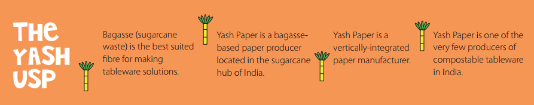
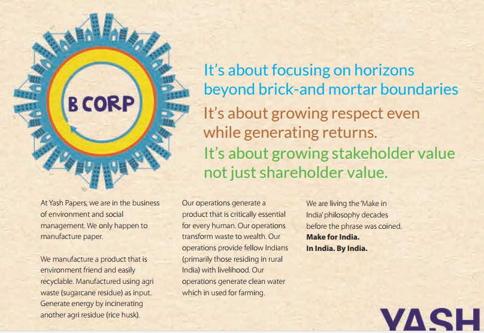
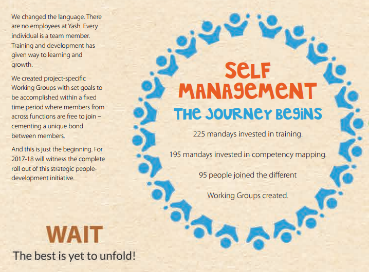
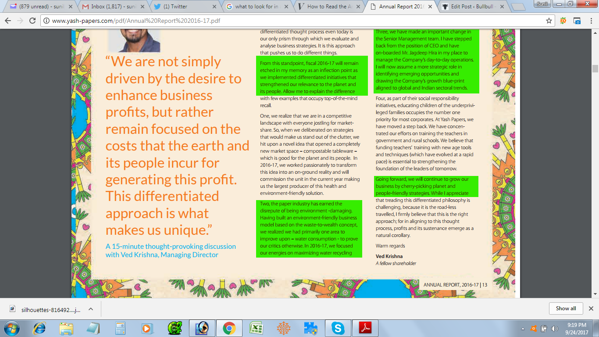
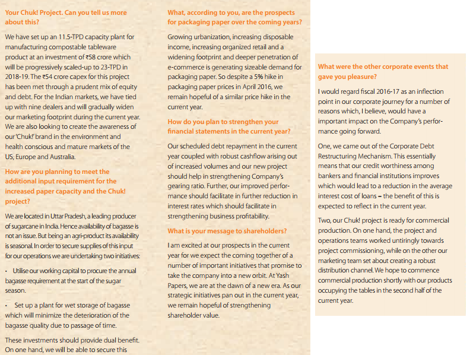
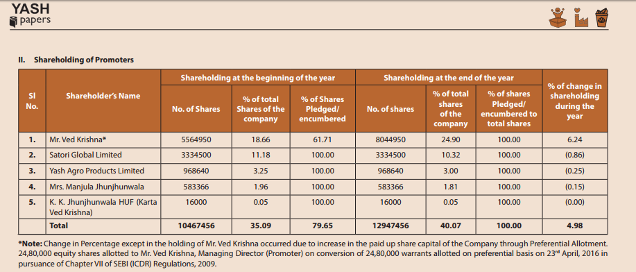
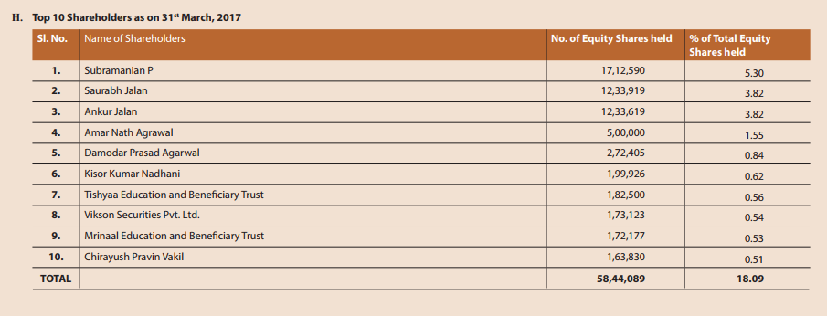
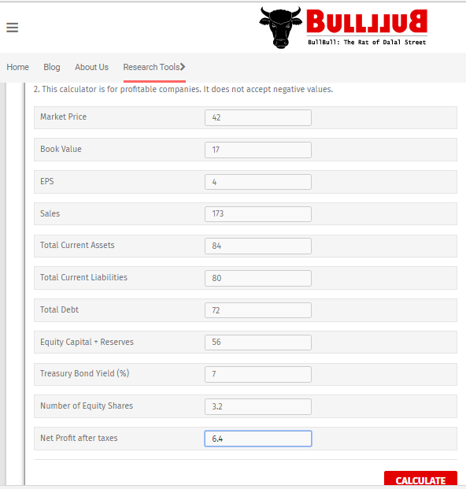
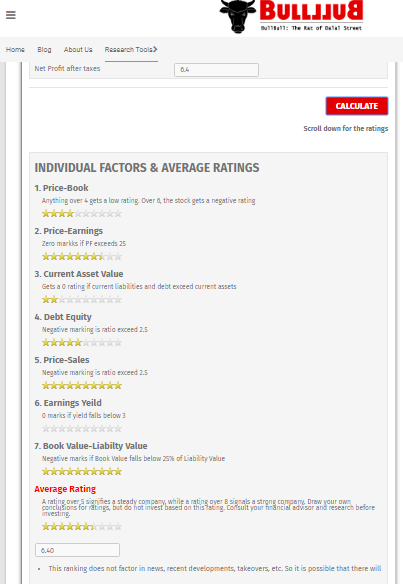

Many folks say that Annual Reports report the past and do not reflect the future.
That is so incorrect and juvenile.
An annual report not only can clue you on to the future of the company, it also can help you analyze management quality and the way the economy is shaping up.
Let’s take an example, let’s analyze Yash Papers’ Annual Report:
- Scan Through Graphics (if any)
This graphic tells me that
(i) Yash Papers converts bagasse into paper (waste to wealth)
(ii) That it is located right next to its sources of raw material
(ii) That it has very few competitors

The following graphic shouts out many positives:
(i) All paper manufactured by Yash Papers is made from waste.
(ii) The company is environment-friendly.
(iii) Generates captive energy using rice husk (waste to wealth (power) again)
(iv) Company provides livelihood to people in rural areas.
(v) It generates clean water for farming.

The following graphic also makes a very bullish statement, by saying that the company invests in manpower training and team work:

Then, this graphic lists the clients and all I can see is solid pedigree:
2. Read Chairman’s Statement, Directors’ Report and Management Analysis
These are the most important parts of any AR. These will clue you on how the company will progress going forward and about the state of the economy.
Here’re some snippets I picked up from the Yash Papers report:
The following clip shouts out that
a. Yash Papers is moving from conventional to environment-friendly processes
b. That the current MD is stepping down to make way for an experienced professional (Jagdeep Hira of Century and Trident (which a later research revealed))

The following clips reveal:
1. Yash is expanding
2. Their captive power plant uses rice bran as fuel
3. That raw material sources are right next to the company
4. That the company is at an inflection point

I’m sure that you get the point.
3. Promoters’ Shareholding
In Yash’s case we can see that the promoter’s increased their stake by 5%. They also pledged 100% of their stake, which is actually cause for nervousness because lenders can sell the stock if loans are not repaid in time or if there’s a margin shortfall. Bears who own stock also take advantage to hammer the stock down and cover at a lower rate.

4. Analyze Salaries Paid to Directors
If a company’s making losses or insufficient profits, but is being generous with salaries paid to the management, it is a sign of low quality management UNLESS that company is into some high-tech valuable stuff that will fetch returns after a few years.
5. Was the Company or its Director Booked for Civil or Criminal Offences?
All ARs contain this information. In Yash’s case there were no offences.
If the AR reports offences, and if these are serious in nature, it implies that the management is unscrupulous.
6. The Corporate Governance Section
This is mostly loaded with blah-blah. However, some companies go into detail and spell out the role of each governance committee. This section was detailed in Yash Paper’s AR and made decent reading, you can check out their AR.
7. Research Top Shareholders
Every company publishes a list of their top shareholders, and if you can find a cult investor in this list, you can assume the stock will significantly appreciate over time.
I checked one such name (Subramanian P) from Yash’s report and found he had a substantial holding.

8. Analyze Debtors
Many companies inflate sales by selling to their subsidiaries or friends. The buyers do not pay up and get accumulated as debtors and the sales get reversed in the next fiscal year. The cycle keeps repeating and debtors keep piling up.
So, before analyzing other ratios, you must analyze debtors.
In Yash Paper’s case:
Sales: 173 crores
Debtors: 12 crores
This is great because it implies that the company’s receives its invoices within 1 month! In this market many companies take 2-3 months to get their dues.
9. Use This tool to Analyze Stock Quality
This is the tool developed for personal use until I launched BullBull.in.
In the first screenshot, I have entered the figures for Yash Papers (in crores)

.This tool calculates ratios and reports on the financial health of the company. It also checks on the company’s solvency.
It awarded a score of 6.4 to yash, which is good considering that the tool did not take into account the developments after the AR was published.

10. Check The Cash Flow
A company that is making good profits should typically generate healthy cash flows unless it is investing in new technologies or making an acquisition.
The cash flow statement helps you understand if the management is managing cash efficiently.
In Yash paper’s case, the cash flow from operating activities is a healthy 19 cores, which is deployed into expansion.
The thing to watch in Yash’s case is how this expansion pays off. If it doesn’t reap dividends in the next 2 quarters then questions can be raised on the Capex.
11. Read The Notes To Accounts
Notes to the accounts can reveal many surprises such as contingent liabilities that can damage the company’s operations. I did not find anything alarmist in Yash Paper’s notes.
Well, that’s it. Try analyzing any AR and drop in a line if you need help.
Comments and feedback will be appreciated.
Very interesting and informative article. Keep up the good work
Appreciate!, very good article , simple to understand and nicely explained with example.
Thanks for your efforts
Gaurav
Thanks for sharing the useful information. Just wanted to know how much time dies it normally takes to read a full AR. There are lot portions that r repetitive and can be skipped
1-3 hours for a good analysis. Folks who dig into commodity and finished goods price trends spend 2-3 days on a report.